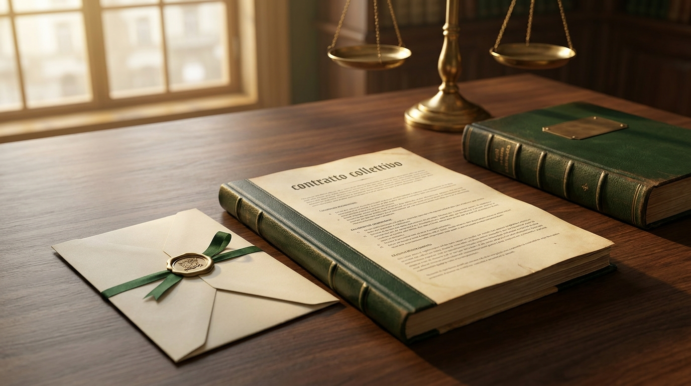

Licenziamento per giusta causa: quanto vincola il contratto collettivo?
Il licenziamento per giusta causa può essere disposto anche se il contratto collettivo non lo prevede, purché la condotta sia di estrema gravità. Ma se il CCNL stabilisce una sanzione più lieve per quel comportamento, il giudice non può trasformarla in licenziamento. La Cassazione fissa così un confine netto tra autonomia delle parti e valutazione giudiziale.

Il principio fissato dalla Cassazione
La Corte di Cassazione, Sezione Lavoro, è tornata su un nodo che attraversa quotidianamente i rapporti di lavoro: il rapporto tra la giusta causa di licenziamento e le previsioni del contratto collettivo (CCNL).
Il ragionamento si muove su due binari. Da un lato, il giudice può riconoscere la giusta causa anche quando il CCNL non la contempla espressamente per una certa condotta: è sufficiente che il comportamento del lavoratore sia tanto grave da ledere in modo irreparabile il vincolo fiduciario. Dall'altro, esiste un limite invalicabile: se il contratto collettivo prevede per quel determinato comportamento una sanzione conservativa (cioè più lieve del licenziamento, come la sospensione o il richiamo), il giudice non può comminare il licenziamento.
L'inquadramento normativo
Il riferimento è l'art. 2119 del codice civile, che consente il recesso senza preavviso quando si verifica «una causa che non consenta la prosecuzione, anche provvisoria, del rapporto». La norma usa una formula aperta, una cosiddetta clausola generale: spetta al giudice riempirla di contenuto valutando la concreta gravità del fatto.
Il punto delicato sta proprio qui. Le previsioni del CCNL non hanno valore meramente esemplificativo quando individuano sanzioni meno gravi del licenziamento. In quei casi le parti sociali hanno già compiuto una valutazione di proporzionalità che vincola anche il giudice. Questi può inasprire la qualificazione solo se la condotta presenta elementi ulteriori e aggravanti che il contratto non aveva considerato. Diversamente, applicare il licenziamento significherebbe disattendere una scelta negoziale che la legge riconosce.
Cosa cambia in concreto
Per il datore di lavoro la pronuncia è un richiamo alla prudenza. Non basta ritenere grave un comportamento: occorre verificare prima cosa dice il CCNL applicato. Se il contratto qualifica quella condotta come passibile di sanzione conservativa, il licenziamento espone l'azienda a un elevato rischio di annullamento, con le conseguenze economiche e reintegratorie connesse.
Resta invece spazio per il licenziamento quando la condotta, pur non tipizzata dal contratto, risulta oggettivamente idonea a spezzare il rapporto fiduciario. La gravità va però documentata e motivata in modo puntuale nella lettera di contestazione e in quella di recesso.
Per il lavoratore la decisione rafforza una tutela. Di fronte a un licenziamento, è essenziale confrontare l'addebito con il sistema disciplinare del CCNL: se per quel fatto il contratto prevede una sanzione minore, il licenziamento può essere contestato come sproporzionato.
Cosa fare in concreto
- Verifica il CCNL prima di agire. Datori di lavoro: controllate il codice disciplinare applicabile e individuate la sanzione tipizzata per la condotta contestata.
- Motiva la gravità in modo specifico. Se procedete al licenziamento, descrivete gli elementi concreti che rendono la condotta incompatibile con la prosecuzione del rapporto.
- Rispettate il procedimento disciplinare. Contestazione tempestiva, specifica e per iscritto, con termine a difesa: i vizi di forma compromettono anche un addebito fondato.
- Lavoratori: confrontate l'addebito con il contratto. Se la sanzione prevista è più lieve, conservate la lettera di contestazione e raccogliete la documentazione utile.
- Agite nei termini di impugnazione. Il licenziamento va impugnato entro 60 giorni dalla comunicazione, seguiti dal deposito del ricorso o dalla comunicazione del tentativo di conciliazione entro i successivi 180 giorni.
Consigliamo, in entrambe le posizioni, una valutazione preventiva del caso concreto: la proporzionalità della sanzione è una questione di dettaglio, dove la differenza tra un recesso legittimo e uno annullabile si gioca sui fatti e sulle clausole contrattuali applicate.
---
*Contributo informativo a cura di Tamburro & Partners - Avv. Giuseppe Tamburro. Non costituisce parere legale.*
Ogni storia di lavoro ha i suoi tempi.
Se gestisci HR e vuoi un confronto su contenzioso, ispezioni o licenziamenti, scrivi allo studio. Ti rispondiamo entro un giorno lavorativo.